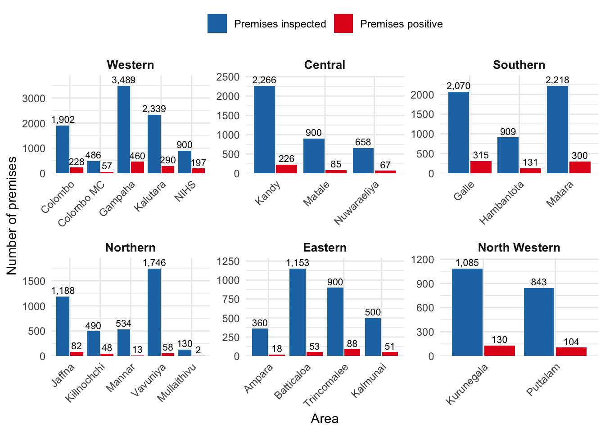
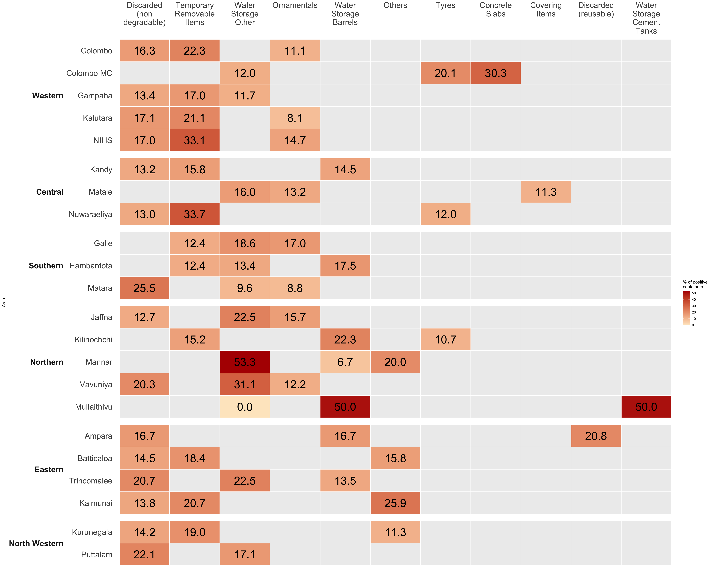

Figure 7.1: Premises inspected and premises found positive for Aedes larvae, by area and province, from January to June 2026: (a) Stacked bar chart by counts, (b) Stacked bar chart by percentage. Schools (42.5%) and factories (38.4%) end up at the top. (Source: returns of entomological surveys received by the NDCU)
Entomological status
1 Introduction
“Entomological status” describes how much Aedes mosquito breeding was found in an area, which tells you the risk of dengue transmission. In your table it comes from larval surveys: teams visit premises (houses, schools, institutions and so on) and check for Aedes larvae in water-holding containers.
2 Premises inspected and premises found positive for Aedes larvae, by area and province, from January to June 2026 Across 4018 Divisions
3 Premises inspected and premises found positive for Aedes larvae, by area and province, June 2026

4 Main type of containers positive for larvae and percentage: June 2026 Data

5 Data Source
Entomology Update June 2026 Published by the National Dengue Control Unit. Link: https://www.dengue.health.gov.lk/wp-content/uploads/2026/07/entomology_update_June-2026.pdf